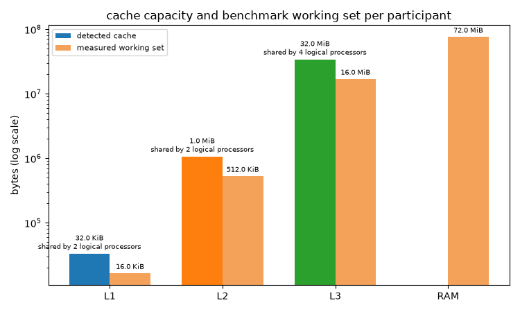
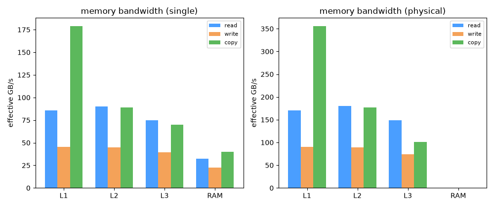
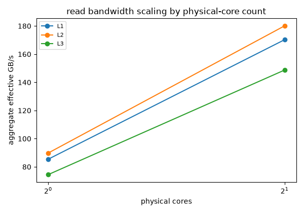
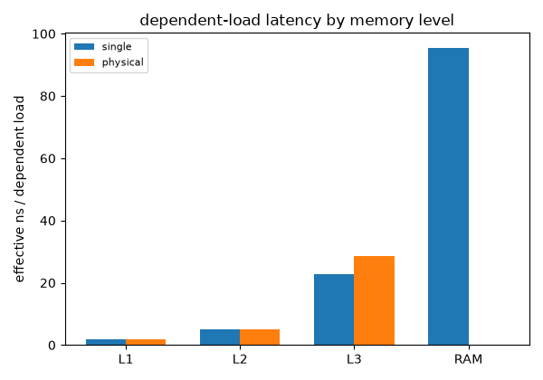
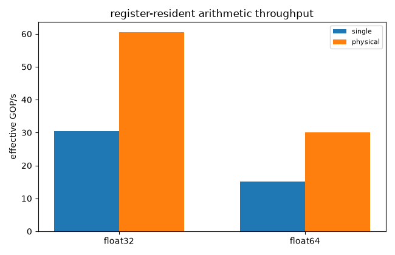
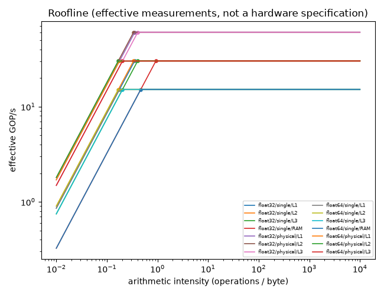

Note
Go to the end to download the full example code.
Processor performance profile: memory, compute, and Roofline#
This example calls onnx_light_cpu.benchmark_processor_performance() –
the single public entry point produced by the
processor performance profile roadmap – and renders
its returned ProcessorPerformanceProfile end to end:
topology, working-set sizes, warnings, a compact measurement table, memory
bandwidth/latency plots, an arithmetic throughput plot, and a Roofline chart.
It does not re-implement any measurement: every number plotted below comes straight from the profile returned by that one call. Every reported number is an effective, working-set measurement taken on this exact host – never a hardware maximum, a physical link rate, or a guaranteed peak (see the roadmap document linked above for the full measurement contract).
The two participant policies answer different questions. single runs one
worker (pinned to the requested logical processor when affinity is available);
physical runs one worker per process-visible physical core, deliberately
excluding extra simultaneous-multithreading siblings. The latter therefore
reports aggregate throughput across physical cores, not throughput from one
core.
Setup#
UNITTEST_GOING=1 shrinks the measurement (fewer repeats, shorter
duration, a smaller memory budget) so the example still runs quickly as a
unit test while exercising every public result path: both thread policies,
latency, an explicit affinity, and every element type this host can supply.
import argparse
import json
import os
import platform
from pathlib import Path
import matplotlib.pyplot as plt
import numpy as np
from onnx_light_cpu import ExplicitAffinity, benchmark_processor_performance
def _processor_name():
cpuinfo = Path("/proc/cpuinfo")
if cpuinfo.exists():
for line in cpuinfo.read_text(encoding="utf-8").splitlines():
key, separator, value = line.partition(":")
if separator and key.strip() == "model name":
return value.strip()
return platform.processor() or "unknown"
unit_test_going = os.environ.get("UNITTEST_GOING", "0") in ("1", "true", "True")
# ``--repeats``/``--minimum-duration-ms`` let the measurement be lengthened
# (e.g. to steady the noisy ``physical`` policy on a busy or high-core-count
# host) without touching the source. ``parse_known_args`` ignores unrelated
# arguments injected by pytest/sphinx-gallery when this file runs as a test
# or a documentation example.
parser = argparse.ArgumentParser(description=__doc__)
parser.add_argument(
"--repeats",
type=int,
default=2 if unit_test_going else 12,
help="number of measurement repeats per (dtype, policy) combination",
)
parser.add_argument(
"--minimum-duration-ms",
type=float,
default=1.0 if unit_test_going else 40.0,
help="minimum wall-clock duration, in milliseconds, of a single measurement sample",
)
args, _ = parser.parse_known_args()
print(
f"benchmark parameters: repeats={args.repeats} minimum_duration_ms={args.minimum_duration_ms}"
)
profile = benchmark_processor_performance(
thread_policies=("single", "physical"),
repeats=args.repeats,
minimum_duration_ms=args.minimum_duration_ms,
memory_budget_bytes=(8 * 1024 * 1024) if unit_test_going else (128 * 1024 * 1024),
include_latency=True,
explicit_single_affinity=ExplicitAffinity(0, 0),
)
benchmark parameters: repeats=12 minimum_duration_ms=40.0
Topology, selected affinities, and working-set sizes#
Everything below is read from profile.topology and profile.memory /
profile.compute – no separate measurement is taken here.
A cache descriptor’s sharing_thread_count is the number of logical
processors that share that cache instance: one means private to one logical
processor, while a larger value means shared by that many logical processors.
It does not mean that every cache at a given level has one global instance.
topology = profile.topology
print(f"processor={_processor_name()}")
print(f"platform={profile.metadata.platform} compiler={profile.metadata.compiler}")
print(f"timer={profile.metadata.timer_name} schema_version={profile.metadata.schema_version}")
print(
f"logical_threads={topology.logical_thread_count} "
f"physical_cores={topology.physical_core_count} "
f"performance_cores={topology.performance_core_count} "
f"efficiency_cores={topology.efficiency_core_count} "
f"cache_topology_detected={topology.cache_topology_detected}"
)
for cache in topology.caches:
print(
f" L{cache.level} {cache.kind:<9} size={cache.size_bytes:>10} bytes "
f"line={cache.line_size_bytes:>3} sharing_threads={cache.sharing_thread_count:>3} "
f"confidence={cache.confidence}"
)
print("\nselected affinities and working-set sizes (memory levels):")
for level, policies in profile.memory.items():
for policy, entry in policies.items():
reference = entry.read or entry.write or entry.copy or entry.read_modify_write
if reference is None:
continue
print(
f" {level:<3} {policy:<8} participants={reference.participant_count:<2} "
f"affinity_pinned={reference.affinity_pinned!s:<5} "
f"working_set={reference.working_set_bytes:>10} bytes"
)
if profile.warnings:
print("\nwarnings:")
for warning in profile.warnings:
print(f" - {warning}")
processor=AMD EPYC 9V74 80-Core Processor
platform=linux compiler=gcc
timer=std::chrono::steady_clock schema_version=2
logical_threads=4 physical_cores=2 performance_cores=2 efficiency_cores=0 cache_topology_detected=True
L1 data size= 32768 bytes line= 64 sharing_threads= 2 confidence=detected
L1 instruction size= 32768 bytes line= 64 sharing_threads= 2 confidence=detected
L2 unified size= 1048576 bytes line= 64 sharing_threads= 2 confidence=detected
L3 unified size= 33554432 bytes line= 64 sharing_threads= 4 confidence=detected
selected affinities and working-set sizes (memory levels):
L1 single participants=1 affinity_pinned=True working_set= 16384 bytes
L1 physical participants=2 affinity_pinned=True working_set= 16384 bytes
L2 single participants=1 affinity_pinned=True working_set= 524288 bytes
L2 physical participants=2 affinity_pinned=True working_set= 524288 bytes
L3 single participants=1 affinity_pinned=True working_set= 16777216 bytes
L3 physical participants=2 affinity_pinned=True working_set= 16777216 bytes
RAM single participants=1 affinity_pinned=True working_set= 75497472 bytes
warnings:
- memory RAM read (physical): working set unavailable for the requested memory level
- memory RAM write (physical): working set unavailable for the requested memory level
- memory RAM copy (physical): working set unavailable for the requested memory level
- memory RAM read_modify_write (physical): working set unavailable for the requested memory level
- memory RAM latency (physical): working set unavailable for the requested memory level
- compute float16 (single): no compiled and runtime-detected native arithmetic path for this element type
- compute bfloat16 (single): no compiled and runtime-detected native arithmetic path for this element type
- compute int8 (single): no compiled and runtime-detected native arithmetic path for this element type
- compute float16 (physical): no compiled and runtime-detected native arithmetic path for this element type
- compute bfloat16 (physical): no compiled and runtime-detected native arithmetic path for this element type
- compute int8 (physical): no compiled and runtime-detected native arithmetic path for this element type
Plot 1: cache hierarchy and measured working sets#
The detected cache capacities and the actual per-participant working sets are different quantities, so both are shown. L1/L2/L3 measurements choose working sets inside the named cache level; RAM chooses one larger than the last-level cache. Cache annotations state whether each selected cache descriptor is private or how many logical processors share it. RAM has no detected capacity: its bar is only the working set used by the benchmark.
def _format_bytes(value):
if value >= 1024**2:
return f"{value / 1024**2:.1f} MiB"
return f"{value / 1024:.1f} KiB"
levels = list(profile.memory.keys())
cache_by_level = {}
for cache in topology.caches:
if cache.kind not in ("data", "unified"):
continue
level = f"L{cache.level}"
if level not in cache_by_level or cache.size_bytes > cache_by_level[level].size_bytes:
cache_by_level[level] = cache
working_sets = {}
for level, policies in profile.memory.items():
entry = policies.get("single") or next(iter(policies.values()))
reference = entry.read or entry.write or entry.copy or entry.read_modify_write
if reference is not None:
working_sets[level] = reference.working_set_bytes
fig_hierarchy, ax_hierarchy = plt.subplots(1, 1, figsize=(7.5, 4.5))
x = np.arange(len(levels))
width = 0.36
for i, level in enumerate(levels):
cache = cache_by_level.get(level)
if cache is not None:
ax_hierarchy.bar(
i - width / 2,
cache.size_bytes,
width,
label="detected cache" if i == 0 else "",
)
sharing = (
"private to 1 logical processor"
if cache.sharing_thread_count == 1
else f"shared by {cache.sharing_thread_count} logical processors"
)
ax_hierarchy.annotate(
f"{_format_bytes(cache.size_bytes)}\n{sharing}",
(i - width / 2, cache.size_bytes),
xytext=(0, 3),
textcoords="offset points",
ha="center",
va="bottom",
fontsize=7,
)
if level in working_sets:
value = working_sets[level]
ax_hierarchy.bar(
i + width / 2,
value,
width,
label="measured working set" if i == 0 else "",
color="#f4a259",
)
ax_hierarchy.annotate(
_format_bytes(value),
(i + width / 2, value),
xytext=(0, 3),
textcoords="offset points",
ha="center",
va="bottom",
fontsize=7,
)
ax_hierarchy.set_yscale("log")
ax_hierarchy.set_xticks(x)
ax_hierarchy.set_xticklabels(levels)
ax_hierarchy.set_ylabel("bytes (log scale)")
ax_hierarchy.set_title("cache capacity and benchmark working set per participant")
ax_hierarchy.legend(fontsize=8)
fig_hierarchy.tight_layout()
fig_hierarchy.savefig("plot_processor_performance_hierarchy.png")

Compact measurement table#
One line per available (level/policy) bandwidth+latency measurement and per (element type/policy) compute measurement. Values are the median of the raw samples retained in the profile; all figures are effective measurements on this host, not a hardware specification.
print("\nmemory bandwidth (effective, median of raw samples):")
print(f" {'level':<4} {'policy':<8} {'read GB/s':>10} {'write GB/s':>11} {'copy GB/s':>10}")
for level, policies in profile.memory.items():
for policy, entry in policies.items():
read = entry.read.median_gbps if entry.read else float("nan")
write = entry.write.median_gbps if entry.write else float("nan")
copy = entry.copy.median_gbps if entry.copy else float("nan")
print(f" {level:<4} {policy:<8} {read:>10.2f} {write:>11.2f} {copy:>10.2f}")
print("\ncompute throughput (effective, median of raw samples, GOP/s):")
compute_policies = [
p for p in ("single", "physical") if any(p in v for v in profile.compute.values())
]
header = f" {'dtype':<9} {'impl':<10}" + "".join(f"{p:>12}" for p in compute_policies)
print(header)
for element_type, policies in profile.compute.items():
implementation_name = next(iter(policies.values())).implementation_name
row = f" {element_type:<9} {implementation_name:<10}"
for policy in compute_policies:
entry = policies.get(policy)
row += f"{entry.median_gops:>12.2f}" if entry else f"{'--':>12}"
print(row)
memory bandwidth (effective, median of raw samples):
level policy read GB/s write GB/s copy GB/s
L1 single 85.63 45.25 179.03
L1 physical 170.25 89.84 355.95
L2 single 90.06 44.96 88.84
L2 physical 180.09 88.83 177.10
L3 single 74.62 39.54 69.87
L3 physical 148.71 73.74 100.89
RAM single 32.52 22.55 39.94
compute throughput (effective, median of raw samples, GOP/s):
dtype impl single physical
float32 AVX2 30.36 60.56
float64 AVX2 15.18 30.16
Plot 2: bandwidth by memory level#
Each recorded sample times repeated sequential aligned streams after warmup:
loads for read, cached stores for write, and one source plus one destination
for copy. Useful bytes are divided by elapsed monotonic wall-clock time, then
the plot uses the median across recorded samples. Each participant owns
disjoint storage; physical values are aggregate bandwidth.
policies_order = [
p for p in ("single", "physical") if any(p in profile.memory[lv] for lv in levels)
]
modes = ("read", "write", "copy")
mode_colors = {"read": "#4a9eff", "write": "#f4a259", "copy": "#5cb85c"}
fig, axes = plt.subplots(
1, max(1, len(policies_order)), figsize=(5 * max(1, len(policies_order)), 4.2), squeeze=False
)
for ax, policy in zip(axes[0], policies_order, strict=True):
x = np.arange(len(levels))
width = 0.25
for i, mode in enumerate(modes):
values = []
for level in levels:
entry = profile.memory[level].get(policy)
measurement = getattr(entry, mode, None) if entry is not None else None
values.append(measurement.median_gbps if measurement is not None else 0.0)
ax.bar(x + (i - 1) * width, values, width, label=mode, color=mode_colors[mode])
ax.set_xticks(x)
ax.set_xticklabels(levels)
ax.set_ylabel("effective GB/s")
ax.set_title(f"memory bandwidth ({policy})")
ax.legend(fontsize=8)
fig.tight_layout()
fig.savefig("plot_processor_performance_bandwidth.png")

Plot 3: aggregate read bandwidth scaling by core count#
The physical-core measurement also records intermediate powers of two, making cache and memory-bandwidth saturation visible instead of reporting only the one-core and all-core endpoints.
fig_scaling, ax_scaling = plt.subplots(1, 1, figsize=(6, 4.2))
for level in ("L1", "L2", "L3"):
entry = profile.memory.get(level, {}).get("physical")
if entry is None or not entry.read_scaling:
continue
ax_scaling.plot(
[point.participant_count for point in entry.read_scaling],
[point.median_gbps for point in entry.read_scaling],
marker="o",
label=level,
)
ax_scaling.set_xscale("log", base=2)
ax_scaling.set_xlabel("physical cores")
ax_scaling.set_ylabel("aggregate effective GB/s")
ax_scaling.set_title("read bandwidth scaling by physical-core count")
ax_scaling.legend(fontsize=8)
fig_scaling.tight_layout()
fig_scaling.savefig("plot_processor_performance_bandwidth_scaling.png")

Plot 4: dependent-load latency by memory level#
Latency uses a randomized single-cycle pointer permutation built before timing. Every load determines the address of the next, preventing overlap; the plotted value is the median nanoseconds per dependent load.
fig_lat, ax_lat = plt.subplots(1, 1, figsize=(6, 4.2))
x = np.arange(len(levels))
width = 0.35
for i, policy in enumerate(policies_order):
values = []
for level in levels:
entry = profile.memory[level].get(policy)
values.append(
entry.latency.median_ns_per_load if entry is not None and entry.latency else 0.0
)
ax_lat.bar(x + (i - 0.5) * width, values, width, label=policy)
ax_lat.set_xticks(x)
ax_lat.set_xticklabels(levels)
ax_lat.set_ylabel("effective ns / dependent load")
ax_lat.set_title("dependent-load latency by memory level")
ax_lat.legend(fontsize=8)
fig_lat.tight_layout()
fig_lat.savefig("plot_processor_performance_latency.png")

Plot 5: arithmetic throughput by element type and thread policy#
Small native kernels keep independent operands and accumulators in registers, so this measures arithmetic rather than memory traffic. Operations are divided by elapsed monotonic wall-clock time and medians are plotted; a fused multiply-add counts as two floating-point operations.
element_types = list(profile.compute.keys())
fig_compute, ax_compute = plt.subplots(1, 1, figsize=(6.5, 4.2))
x = np.arange(len(element_types))
width = 0.35
for i, policy in enumerate(policies_order):
values = [
(
profile.compute[element_type][policy].median_gops
if policy in profile.compute[element_type]
else 0.0
)
for element_type in element_types
]
ax_compute.bar(x + (i - 0.5) * width, values, width, label=policy)
ax_compute.set_xticks(x)
ax_compute.set_xticklabels(element_types)
ax_compute.set_ylabel("effective GOP/s")
ax_compute.set_title("register-resident arithmetic throughput")
ax_compute.legend(fontsize=8)
fig_compute.tight_layout()
fig_compute.savefig("plot_processor_performance_compute.png")

Plot 6: Roofline#
Every point below is read from profile.roofline: a horizontal ceiling at
the measured compute throughput for one element type/policy, a diagonal
ceiling derived from the measured read bandwidth of one memory level, and
their crossover arithmetic intensity. These are derived quantities that
still link back to the exact compute and memory measurements they were
computed from – not an idealized hardware Roofline.
fig_roof, ax_roof = plt.subplots(1, 1, figsize=(6.5, 5))
intensity = np.logspace(-2, 4, 200)
for element_type, per_policy in profile.roofline.items():
for policy, per_level in per_policy.items():
for level, point in per_level.items():
memory_bound = point.memory_read_gbps * intensity
roofline_curve = np.minimum(memory_bound, point.compute_gops)
ax_roof.plot(
intensity,
roofline_curve,
label=f"{element_type}/{policy}/{level}",
linewidth=1.2,
)
ax_roof.scatter(
[point.arithmetic_intensity_crossover],
[point.compute_gops],
marker="o",
s=14,
)
ax_roof.set_xscale("log")
ax_roof.set_yscale("log")
ax_roof.set_xlabel("arithmetic intensity (operations / byte)")
ax_roof.set_ylabel("effective GOP/s")
ax_roof.set_title("Roofline (effective measurements, not a hardware specification)")
ax_roof.legend(fontsize=6, ncol=2)
fig_roof.tight_layout()
fig_roof.savefig("plot_processor_performance_roofline.png")
plt.show()

Serialization#
to_dict() gives a stable, versioned JSON-compatible representation of
the whole profile (metadata, topology, memory, compute, roofline, and
warnings), suitable for archiving alongside a run or feeding a future
optimal-transport GEMM tile-placement cost model.
serialized = profile.to_dict()
assert serialized["metadata"]["schema_version"] == profile.metadata.schema_version
print(f"\nserialized profile keys: {sorted(serialized.keys())}")
print(f"serialized JSON size: {len(json.dumps(serialized))} bytes")
serialized profile keys: ['compute', 'memory', 'metadata', 'roofline', 'topology', 'warnings']
serialized JSON size: 28692 bytes
Total running time of the script: (0 minutes 40.190 seconds)